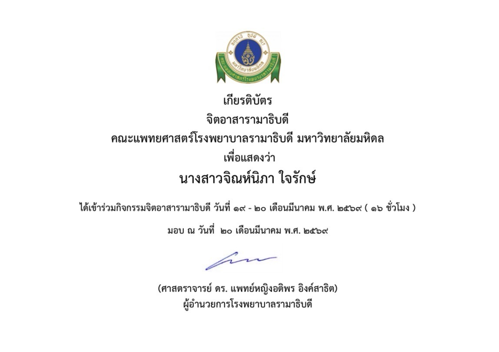

สวัสดีค่ะ 👋
ฉันชื่อ จิณห์นิภา ใจรักษ์
Jinnipa Jairak
🎓 Student | 🧬 Medical Technology | 💻 Technology
ยินดีต้อนรับเข้าสู่ Portfolio ของฉัน
✨ ทำความรู้จักฉัน 📂 ดูผลงาน
Jinnipa Jairak
🎓 Student | 🧬 Medical Technology | 💻 Technology
ยินดีต้อนรับเข้าสู่ Portfolio ของฉัน
✨ ทำความรู้จักฉัน 📂 ดูผลงานสวัสดีค่ะ ฉันชื่อ จิณห์นิภา ใจรักษ์ (Jinnipa Jairak)
ปัจจุบันกำลังศึกษาชั้นมัธยมศึกษาปีที่ 6 โรงเรียนบ้านบึง"อุตสาหกรรมนุเคราะห์" และมีความสนใจในด้าน Medical Technology ซึ่งเกี่ยวข้องกับคณะที่ดิฉันสนใจศึกษาต่อ คือ คณะเทคนิคการแพทย์ รวมถึงเทคโนโลยีและการนำความรู้ทางวิทยาศาสตร์ มาประยุกต์ใช้ให้เกิดประโยชน์
ดิฉันมีความสนใจในด้านสายสุขภาพตั้งแต่เริ่ม จากนั้นดิฉันได้รู้จักกับคณะเทคนิคการแพทย์ ดิฉันรู้สึกว่าตัวคณะได้ตอบโจทย์ความต้องการในการศึกษาต่อในระดับอุดมศึกษา ดิฉันจึงมีใจรักในการศึกษาต่อในคณะนี้
เว็บไซต์นี้จัดทำขึ้นเพื่อรวบรวมประวัติ ทักษะ ผลงาน และประสบการณ์ต่าง ๆ รวมถึงเป็นพื้นที่สำหรับแนะนำตัวเอง
ตัวอย่างผลงานและโปรเจกต์ที่สามารถนำมาแสดงใน Portfolio

ชื่อผลงาน: การเข้าร่วมการคัดเลือกค่ายต้นกล้าส่องแสงครั้งที่ 7 ของคณะเทคนิคการแพทย์ มหาวิทยาลัยมหิดล
รายละเอียด: ดิฉันได้มีโอกาสผ่านการรับเลือกเข้าค่ายที่คณะเทคนิคการแพทย์ มหาวิทยาลัยมหิดล ได้มีประสบการ์ณที่ดี จากการเข้าร่วมค่ายในครั้งนี้ ดิฉันได้ทำกิจกรรมที่หลากหลาย ทั้งการทำแล็ป สอบแล็ปกริ๊ง รวมถึงได้ความรู้ที่เกี่ยวกับตัวคณะโดยตรง ได้คำปรึกษาจากรุ่นพี่ในคณะ มีความทรงจำที่ดีที่ดิฉันประทับใจมาก ๆ
ทักษะที่ใช้: Laboratory, Research, Teamwork

ชื่อผลงาน: ประสบการ์ณการทำงานที่โรงพยาบาลรามาธิบดี
รายละเอียด: ดิฉันได้มีโอกาสฝึกงานที่โรงพยาบาลรามาธิบดี ซึ่งงานที่ดิฉันได้ทำคือ มีหน้าที่วัดความดัน และเดินส่งเอกสารให้บุคลากรทางการแพทย์ ดิฉันได้ประสบการ์ณ มุมมองใหม่ ๆ ในการทำงาน ได้เรียนรู้การทำงานในโรงพยาบาลว่าเป็นอย่างไร
ทักษะที่ใช้: Communication , Attention to Detail & Patience
กำลังศึกษาในระดับการศึกษาปัจจุบัน ชั้นมัธยมศึกษาปีที่ 6 และมีความสนใจในสาขา Medical Technology
ศึกษาความรู้ด้านวิทยาศาสตร์ เทคโนโลยี การทำงานเป็นทีม และการพัฒนาทักษะด้านดิจิทัล
พัฒนาความรู้และทักษะให้สามารถ นำเทคโนโลยีมาประยุกต์ใช้ร่วมกับ Medical Technology และสร้างผลงาน ที่มีประโยชน์ต่อผู้อื่น
ชอบเรียนรู้สิ่งใหม่ ๆ และพัฒนาตัวเองอยู่เสมอ
มีความสนใจด้านวิทยาศาสตร์ และการทำงานอย่างเป็นระบบ
สนใจการใช้เทคโนโลยี เพื่อสร้างสรรค์ผลงาน
สามารถทำงานร่วมกับผู้อื่น และแลกเปลี่ยนความคิดเห็นได้
หากต้องการติดต่อหรือพูดคุยเกี่ยวกับผลงาน สามารถติดต่อผ่านช่องทางต่าง ๆ ได้